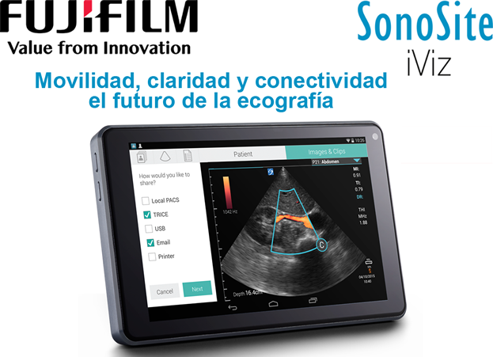

Sonosite iviz

Registro Sanitario: 0882E2016 SSA
DESCRIPCIÓN:
Decisiones con confianza cuando y donde lo necesite.
iViz es su solución para la obtención de imágenes premium que conecta con los sistemas informáticos médicos de hospitales y los servicios en la nube. iViz le permite acceder a recursos en línea, aplicaciones en información esencial del paciente para todas sus necesidades clínicas móviles.
MOVILIDAD:
- Llevar la solución con usted.
- Se ajusta a su mano para que pueda sujetar y controlar su pantalla táctil.
- Pesa 520 g.
- Con 64 GB de memoria, puede almacenar más de 1,000 estudios.
- Batería intercambiable y recargable que permite una hora de escaneo continuo.
CLARIDAD:
- Tome decisiones con confianza.
- Pantalla de alta resolución de 7"/17.8 cm 1,920 x 1,900 pixeles.
- Aplicaciones cardiacas, abdominales, pulmonares y de obstetricia.
- Controles de optimización de imagen.
- Paquetes de cálculo y medidas para aplicaciones cardiacas y obstetricia.
- 2D, Modo-M, Doppler Color y THI con varias configuraciones de optimización.
CONECTIVIDAD:
- Diagnóstico a distancia gracias a la solución segura de telemedicina basada en la nube Tricefy™.
- Acceso a la información del paciente desde EMR y envío de estudios a EMR a través de la gateway Synapese®.
- Realice y guarde 12 exámenes de SHL (Smartheart™)* junto con estudios ecográficos.
- Envíe por correo electrónico imágenes anónimas de estudios para una segunda opinión.
- Aplicaciones productivas como navegador de internet, notas, calculadora, etc.
- Acceso a tutoriales online.
TRANSDUCTORES:
SonoSite se dedica al diseño, fabricación y la realización de pruebas de transductores que cumplan las exigencias de nuestros clientes. Nuestros transductores superan los requisitos más exigentes en cuanto a resistencia a caídas y salpicaduras, por lo que puede utilizarlos con total seguridad, incluso en las condiciones más adversas.
DATOS COMPLEMENTARIOS: En FUJIFILM de México queremos convertirnos en su mejor aliado, es por eso que estamos comprometidos con nuestros clientes y ofrecemos el mejor servicio posventa.
FUJIFILM DE MÉXICO, S.A. de C.V.
Teléfono: (55) 5263-5500
e-mail: ultrasonido@fujifilm.com.mx
www.fujifilm.com.mx